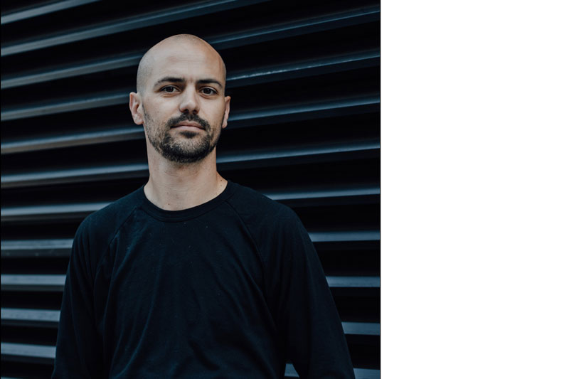

About Me

My approach to technology starts and ends with humans. Not just when I think about who is going to use my technology, but who that technology is replacing. The root of human civilization is the relationship between two people, and I can think of nothing more important to consider, when designing an experience, than how to create a relationship between human and technology.
I started my professional career as a technical writer. For a bank. That's a long way away from my current role as Senior UX Designer at W+K Lodge in Portland, OR.
That's kind of the story of my life, however. I've never found that one craft to drive me forward. I like learning lots of things—my college career is proof of that. My interests range from language to physics to psychology to typography to application development.
The path to being a UX designer covers the work of the last 10 years of my life. I moved to Portland, OR in 2008 with no gainful employment. I had worked the prior two years as a graphic designer in a four-color press shop in my hometown of Arcata, CA.
One day, after deciding that graphic design was something I'd rather not pursue, I resorted to Craigs List. I needed a job. I saw a listing for Junior Mac Technician at Wieden+Kennedy, a company I'd never heard of—of course, I'd grown up watching their work.
Long story short, I got the job, and quickly began to learn how to automate the boring parts of my job away—I wanted to learn more! As I learned more and more about scripting, I began to learn how to write code. My proficiency in the combined manual/automated management of machines in our building led to more advanced duties.
Eventually, I became a developer for the IT department. Then, I focused mostly on business services, working on a combination of websites and database applications. I wanted more.
Next, I moved into my present home, W+K Lodge. I started in the Lodge as a backend developer, helping to architect and code scalable systems for short-lived, high-traffic events. As I developed more and more, I realized that the human side of the equation was more interesting to me, and more applicable to my background.
So, over the course of a couple of years, I moved onto our design team as a designer, now Senior designer. My special mix of code, writing, psychology, and information architecture has proven quite effective at approaching projects in the creative technology space.
I live in the Portland, OR area with my loving family and dog. I love to read, write, watch movies, and cook.